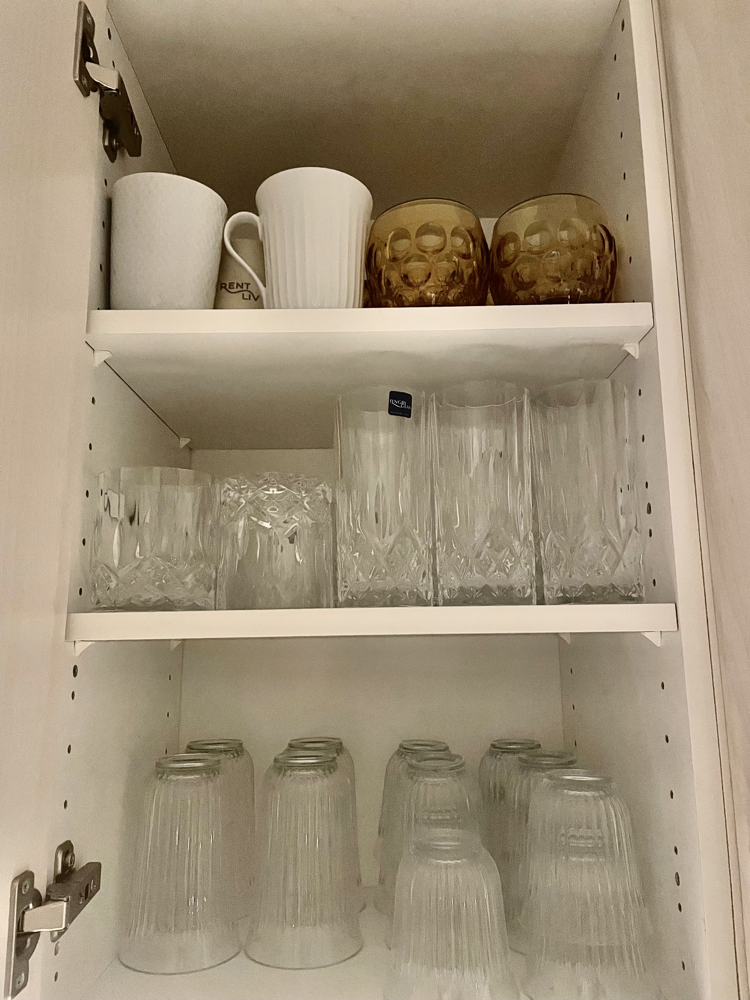

Informationsarkitektur
Informationsarkitektur (IA) er et begreb der referer til organisering og strukturering af information inden for et produkt eller en service. Det handler først og fremmest om organisering af information på en måde der hjælper brugeren med at nå sit mål på en effektiv måde.
Når man arbejder med informationsarkitektur, er det for et skabe et brugbart produkt. Det handler om at få organiseret, systematiseret og navngivet sit indhold. Når man arbejder med informationsarkitektur arbejder man typisk med disse produkter:
- (User Stories)
- Feature/unfeature-lister
- Indholdshierarki
- Sitemap
- User flow
- Navigation
- (Wireframes)
Når man arbejder med AI er følger man en fremgangsmåde der hedder - identificering af indhold (herunder funktioner), overordnet organisering, navigationsdesign og derefter - resten.
Wurman’s fem måder at organisere på - LATCH
- Location
- Alphabet
- Time
- Category
- Hierarchy
Tilfældig – er IKKE organisering!
I sammenhæng med latch, kiggede vi på hvordan vi personligt organiserede vores ting i hjemmet. På billedet her ses organiseringen af glas i mit køkken. Her kan man se at de er delt ind i kategorier, men også efter hierarki, dem jeg bedst kan lide at bruge, står nederst hvor jeg bedst kan nå dem.

Udover at arbejde med at kategorisere og organisere ting, arbejde vi også med:
User stories
- Beskriver formålet med siden, ud fra en brugers perspektiv.
- Har alt følgende format - Som _____ ønsker jeg at _____ fordi _____
- User stories udarbejdes ud fra det kendskab man har til brugeren.
Feature/unfeature-lister
- Featureliste: Hvad er vigtigt at have med på sitet?
- Unfeatureliste: Hvad er IKKE vigtigt. Hvad aftaler vi ikke at lave (i denne version)
- Specielt unfeaturelisten er vigtig, så projektet ikke bliver for stort.
Indholdshierarki
- Beskriver et hierarki over hvad der er vigtigst, næstvigtigst, mindre vigtigt osv
- Laves med udgangspunkt i viden om emnet, brugere mv
- Laves for hele sitet med udgangspunkt i featurelisten
- Når der er lavet inddeling i sider, laves også et indholdshierarki for hver side
- Brug indholdshierarkiet til at tjekke at det vigtigste også er let tilgængeligt
Sitemap
- Inddeling af indhold i relevante kategorier – navngivning af kategorier
- Ofte mest hensigtsmæssigt ikke at have kategorinavne, men efter en kortsortering lade brugerne foreslå kategorinavne
- Kategorinavne, sideoverskrifter mv. testes efterfølgende
- Sitemap skal afspejle indholdshierarkiet
User flow
- Angiver forventede måder at anvende sitet på
- Kan være forskellig, alt efter brugerens mål med siden (Østergaard, 2021)
Redesign af hjemmeside
En af opgaverne på dagen var at lave et redesign af en selvvalgt hjemmeside. I min gruppe valgte vi at arbejde med hjemmesiden arngren.net. Hermed link til opgaven - Link til opgave
Arbejdet med informationsarkitektur
Informationsarkitektur har virkelig givet noget i forhold til at design og layout af websites! I dette emne har vi fået de sidste brikker med til hvor man skal gribe det hele an når man designer hjemmesider.